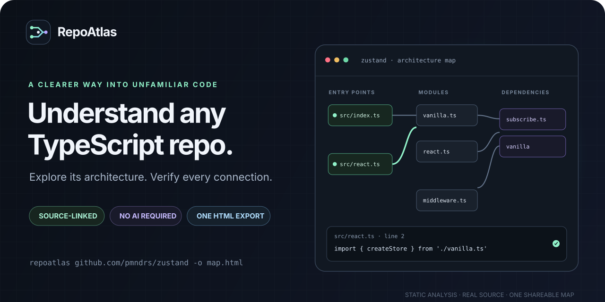

A clearer way into unfamiliar code
Understand any TypeScript repo.
Explore its architecture. Follow a dependency. Verify the exact source line behind every connection.
Static analysis · No AI API · One shareable HTML file

Start with a real project
Click a module, follow its connections, and inspect the source evidence. No install needed.
From repository to a map
1. Point to a repo
Use a GitHub URL or a local TypeScript project.
2. Explore the graph
Find entry points, modules, imports, and unresolved edges.
3. Verify the evidence
Inspect the line and open its commit-pinned GitHub permalink.
Ready to map your own codebase?
Get started on GitHub ↗Open the README for install steps, examples, and the analyzer's boundaries.